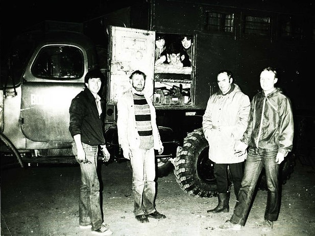
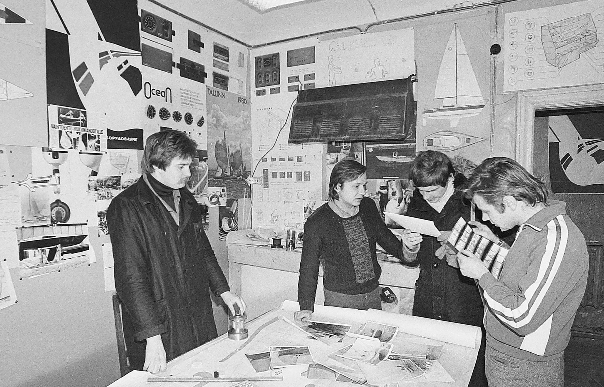
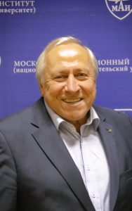
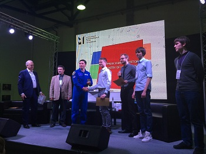

В 1975 году на кафедре 608 "Двухсредные летательные аппараты" ("Проектирование аэрогидрокосмических систем") было образовано новое подразделение - студенческое конструкторское бюро (СКБ 608), которое в дальнейшем получило название "Океан".
Инициатива создания студенческого КБ в большей степени принадлежала именно студентам института при активной поддержке морского клуба МАИ "ВОЛНА". Огромное желание молодых специалистов участвовать в научно-технической деятельности с дальнейшей практической реализацией реальных образцов передовой техники положило начало организации по-настоящему молодежного конструкторского бюро, объединившего молодых ребят равных не только по возрасту, но и по убеждениям.
Фактически, по инициативе студентов был создан творческий коллектив, которому, в дальнейшем, поручалось решение задач, утверждаемых на уровне Совета Министров СССР. Огромная административная работа, которая была проведена руководством для открытия студенческого КБ как структурной единицы в составе кафедры 608, а также института в целом, говорила об острой необходимости существования подобной организации.
Основной задачей, которую руководство института ставило перед СКБ 608 - в первую очередь - повышение качества подготовки высококвалифицированных научно-технических кадров для оборонных отраслей промышленности, кроме этого перед СКБ ставились задачи по практической реализации научно-технических разработок и их дальнейшее внедрение в промышленность.
Для решения поставленных задач в научный состав СКБ вошли сотрудники и аспиранты кафедры 608, имеющие опыт работы со скоростной ракетной и высокомобильной подводной техникой, а также были привлечены сотрудники маёвского морского клуба "Волна", на которых была возложена задача организации проведения научно-исследовательской работы студентов (НИРС) и привлечение к научно-исследовательской деятельности будущих молодых специалистов нашего института.
Следует отметить, что в первый состав СКБ вошли сотрудники, у которых за плечами был не только опыт научно-исследовательской работы в области высокоскоростных подводных аппаратов, но и опыт проведения подводно-технических работ. Многие из них были спортсменами -подводниками, имевшими не только Всесоюзную славу, но и международную известность, например такие спортсмены как Макушенко Эдуард, Ларин Вячеслав, Клименко Борис и т.д., которые на сегодняшний момент также являются сотрудниками нашего института.
Молодые сотрудники, аспиранты и студенты СКБ проходили практическую подготовку по освоению водолазной профессии, т.е. кроме получения диплома о высшем образовании по специальности "ракетостроение", каждый сотрудник СКБ становился и водолазным специалистом, способным самостоятельно выполнять сложные экспериментальные исследования под водой.
Среди консультантов и научных руководителей СКБ были доктора наук, профессора, кандидаты технических наук, аспиранты, многие из которых имели огромный опыт работы в промышленности, среди первых научных руководителей СКБ был также Лауреат Ленинской премии СССР Патрушев В.И., один из первых руководителей СКБ 608 "Океан" - Бачурко Владимир Иванович на сегодняшний момент является председателем клуба выпускников МАИ.
В первые же годы своего существования под руководством Махрова В.П., Рудовского О.Б., Непокойчицкого В.Н. при активном участии студентов Апаринова В.А., Бачурко В.И. и др. фактически силами студентов СКБ были созданы и доведены до практической эксплуатации с последующим внедрением в промышленность следующие проекты:
высокомобильные многофункциональные носители аквалангистов (подводные буксировщики) МАИ-3, "Малютка", "Шельф", "Ланка", "МАИ-5", "МАИ-7", предназначенные для проведения поисковых работ на шельфе, обследования подводных объектов, выполнение вспомогательных функций при проведения широкого спектра подводно-технических работ, туристических и спортивных целей, а также - тренировка летчиков и космонавтов в естественных условиях на вестибулярное раздражение;
различные типы погружаемых глубоководных носителей гидрофизической аппаратуры для исследования морского дна и проведения поисковых работ при отработке различных видов морского оружия;
по заказу Министерства здравоохранения СССР была разработана, изготовлена и испытана барокамера гипербарической оксигенации для лечения пациентов в кислородной среде;
выполнен проект МАИ-4 "ПОИСК" - двухсредного пилотируемого аппарата для исследования режимов движения при переходе из водной среды в воздушную и обратно;
разработана, изготовлена и испытана в условиях гидробассейна в Центре Подготовки Космонавтов раскрываемая ферменная конструкция для создания многомодульных каркасных панелей в условиях невесомости.
Сегодняшние молодые сотрудники СКБ являются достойными продолжателями творческих традиций и могут гордится не менее значимыми достижениями, чем были сделаны их предшественниками. За последние годы силами СКБ были реализованы следующие проекты:
в период 1996 до 2010 год были разработаны и изготовлены многофункциональные носители аквалангистов "Акванта" и "Акватика", которые проходили опытную эксплуатацию в Арабских Эмиратах (1998 г.), Мальта (2006 г.) Австралии (2009 г.). Подводный аппарат "Акванта" демонстрировался в 1998 г. на Международной выставке EXPO 98 в г. Лиссабон (Португалия) как достижение студентов Высшей школы России;
с 2000 г. студентами СКБ был спроектирован и изготовлен полноразмерный моторный макет экраноплана "ЭЛА-001". Первые ходовые испытания были проведены в 2011 г. на базе водномоторного спорта в г. Спасск-Рязанский (Рязанская обл.) при непосредственной поддержке мэра города Жукова А.;
изготовлен в соответствии с техническими требованиями масштабный макет скоростного подводного буксировщика "Гарпун" и проведены гидродинамические испытания в условиях гидроканала им. Жуковского Н.Е. в ЦАГИ (Москва, ул. Радио);
разработана техническая документация для изготовления "Интеллектуального надводно-подводного комплекса "БЛИК" и изготовлена технологическая оснастка для изготовления корпусных элементов конструкции, также силами студентов изготовлены некоторые узлы и агрегаты;
изготовлен в соответствии с техническими требованиями масштабный макет экраноплана "ЭЛА-608 "ОКЕАН" для проведения аэродинамических испытаний в аэродинамической трубе на кафедре 105 МАИ;
проведены теоретические расчеты и в настоящий момент ведутся работы над созданием масштабной модели М (1:100) проекта "АЭРОСТАРТ" для проведения демонстрационных испытаний по запуску модели ракеты с высоты 10 км;
разработан и изготовлен "Многофункциональный носитель водолазного оборудования "ПОНИ" - автоматический исследовательский комплекс для обследования подводных участков нефте- газопроводов;
ведутся работы на созданием полномасштабного моторного стенда "Экраноплан ЭЛА-608-"ОКЕАН" для проведения ходовых испытаний и отработки взлетно-посадочных режимов в натурных условиях с использованием глиссирования и воздушной подушки. Также с участием студентов СКБ ведутся проектно-конструкторские работы с выпуском конструкторской документации для изготовления опытного образца экраноплана-трансформера.
За последние 5 лет студенты приняли участие с новыми техническими разработками более чем в 20 выставках, из которых 7 имеют Международный статус, 5 - Всероссийский, среди них такие как "Международный Салон изобретений и интеллектуальной собственности "Архимед", "Научно-Техническое Творчество Молодежи "НТТМ", "Московский Международный Салон Образования "ММСО", "МАКС". Также наше СКБ является постоянным участником различных тематических конференций, где представляют результаты своих теоретических исследований.
На различных выставках только за последние 2 года достижения студентов были отмечены 30 дипломами различной степени, медалями различного достоинства, призами и кубками. Кроме этого проекты СКБ многократно удостаивались грантов на международных и всероссийских выставках, а сами студенты - авторы проектов отмечались премиями и именными стипендиями.
Только на выставке "Архимед 2015" и "ММСО 2015" воспитанники были отмечены 4 медалями, среди которых одна высшего достоинства, призами 1-ой степени, а также награждены кубком за 2-е место в инженерном конкурсе "GO MOSCOW".
Кроме этого наши студенты завоевали специальный приз 1-ой степени, учрежденный Роскосмосом за проект "АЭРОСТАРТ", который был вручен летчиком-космонавтом России С.Ревиным.
Проекты студентов были также отмечены во время участия в Молодежном форуме «Волга–2015». Проекту "Интеллектуальный надводно-подводный исследовательский комплекс "БЛИК" был присужден гранд первой степени, а проекту Многофункциональный носитель водолазного оборудования "ПОНИ" - гранд третьей степени, также проект "Экраноплан "ЭЛА-608 "ОКЕАН" был удостоен специального подарка от Роскосмоса.